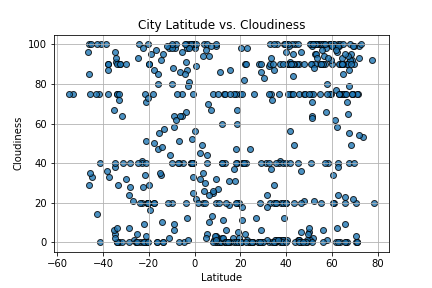

Cloudiness

There appears to be no relationship between latitude and cloudiness. The amount of cloudiness seems to be fairly evenly distributed across the represented city latitudes.
There appears to be no relationship between latitude and cloudiness. The amount of cloudiness seems to be fairly evenly distributed across the represented city latitudes.